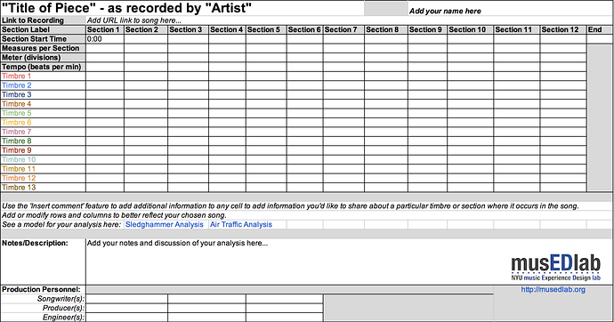

PROJECT 2: Analyze Your Favorite Tune and Share It
Apply the process that Ethan introduced you to in Project 1 to one of your favorite tunes:

Open up a copy of our Musical Structure Graph Template [link withheld], and place the sound sources you hear in your recording down the left hand side of the graph. Note: You may choose a different song or a new song for this project. It's your choice. Also, be sure to add your name, place a link to your chosen recording, and fill in the Songwriter, Producer, and Engineer fields at the bottom of the graph.
First listen for and label the sections of your song. Feel free to use the labels that make sense to you (e.g., verse, intro, chorus, break, refrain, A, B, C, D, coda, end of the tune, etc.). Be sure to also note the start time of each section in the recording and place those in the graphs so that others know where you hear the sections enter and exit.
Count and determine the number of measures per section, and label the meter (including any meter changes), and the tempo of the song (and any changes).
Listen for when each sound source enters and exits within your chosen recording. When it is present within a particular section, highlight the cell of the section with the color associated with the timbre. Sometimes, a sound source is only present in the beginning or end of a section, or has some special treatment or effect added to it in the chorus, but not the verse. Feel free to use the "add comment" feature in Google Spreadsheets to insert a contextual comments in each cell to more fully describe how you hear each timbre in each section. The more you share, the more we will understand what and how you hear your chosen recording.
Paste a link to the specific recording you analyzed (if available online), copy the URL to your completed Musical Structure Graph Template, and share your analyses with your crew by posting it to your Crew(s) over in the Meet category [link withheld] AND in the Module 3 Project Share topic in this category. We recommend you plan to do this within a few days so that you can get feedback from your Crew before we release Module 4 in mid June.
As you might have guessed, we encourage you to be creative in this course. If you find our Musical Structure Graph Template limiting, feel free to use your imagination and develop a different template than the one shared in Step 1, above. Some people prefer to work with pens, markers, and paper. For others, Google Spreadsheets is fine. Whatever method you use, be sure to either share a link or take a photograph of it and post a photo of it to your learning ensemble.
******There is a lot of new content in this Module. Please feel free to go through at your own pace and ask lots of quesitons. Also, check out the Other People's Good Ideas section for more tips, tools, and strategies for listening for structure in musical recordings.******
Have fun! And, Learn Some More...
Listening to, analyzing, and sharing your music with others is fun stuff! But, you may be saying to yourself "I thought the name of the course was Play With Your Music?" To do just that (and to prepare a bit for the next module!) search for your favorite song (or upload an mp3) on The Infinite Jukebox [link withheld], powered by the folks over at The EchoNest [link withheld]. Learn from legendary music hacker and programmer Paul Lamere [link withheld] about why and how he created Infinite Jukebox [link withheld] and how you can “tune” Infinite Jukebox [link withheld] to literally Play With Your Music!